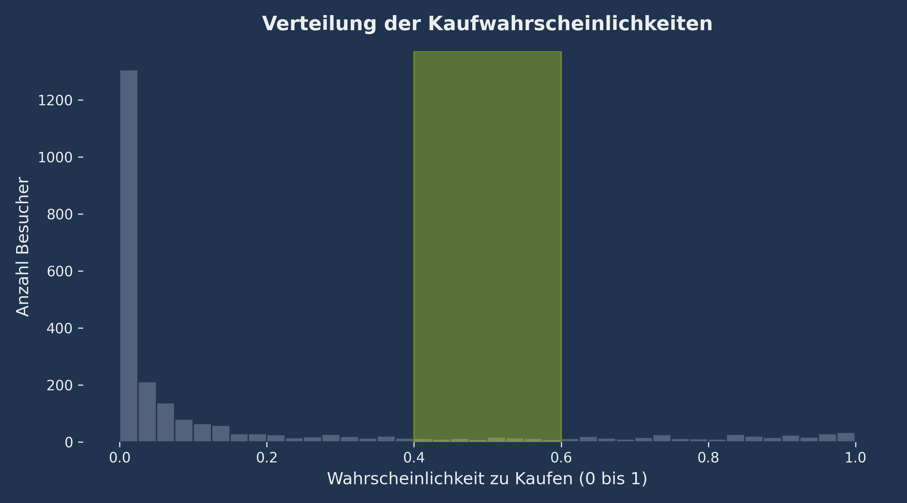

Case 01
Smart Vouchers & Margenschutz
Gezielte Incentivierung statt Gießkannenprinzip: Das Modell identifiziert unentschlossene Nutzer mit einer Kaufwahrscheinlichkeit von 40% bis 60%. Das verhindert teure Mitnahmeeffekte bei entschlossenen Käufern und maximiert die Conversion bei minimalem Margenverlust.
